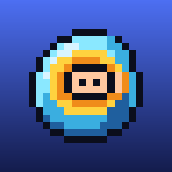

Abyss Diver
Gizlilik Politikası · Privacy Policy
Gizlilik Politikası
Yürürlük tarihi: 14 Kasım 2026
Abyss Diver, iPhone, iPad ve web tarayıcısı için bir piksel dalış oyunudur. Bu politika, oyunun hangi bilgileri neden kullandığını açıklar. Kısaca: hesap açmadan oynarsanız hiçbir kişisel bilginizi toplamayız. Reklam, takip veya analiz aracı yoktur.
1. Hesapsız oynama (varsayılan)
Oyun açılır açılmaz oynanır. İlerlemeniz (açılan bölümler, skorlar, yıldızlar, seçtiğiniz dalgıç ve ayarlar) yalnızca kendi cihazınızda saklanır ve bize gönderilmez.
2. İsteğe bağlı bulut kaydı (Google veya Apple ile giriş)
Ayarlar menüsünden isterseniz Google ile (uygulamada ayrıca Apple ile) giriş yapabilirsiniz. Bunun tek amacı ilerlemenizi yedeklemek ve cihazlarınız arasında eşitlemektir. Giriş yaptığınızda:
- Hesap bilgileri: adınız, e-posta adresiniz ve bir kullanıcı kimliği, giriş hizmeti Firebase Authentication (Google) tarafından işlenir. Apple ile girişte e-postanızı gizlemeyi seçebilirsiniz.
- Oyun ilerlemesi: açtığınız en yüksek bölüm, bölüm başına en iyi skor ve yıldız, seçili dalgıç ve son güncelleme zamanı, Google Cloud Firestore'da hesabınıza bağlı olarak saklanır.
Bu bilgileri satmayız, kimseyle paylaşmayız, reklam veya takip için kullanmayız. Ayarlar (ses, kontroller vb.) buluta gönderilmez.
3. Hesabı ve verileri silme
Oyunda Ayarlar → DELETE ACCOUNT ile hesabınızı ve bulut kaydınızı istediğiniz an kalıcı olarak silebilirsiniz. Cihazınızdaki ilerleme silinmez. Oyuna erişemiyorsanız destek.rahimov@gmail.com adresine giriş yaptığınız e-posta ile yazın; talebiniz en geç 30 gün içinde yerine getirilir. Ayrıntılar: hesap silme.
4. Saklama süresi
Bulut kaydı, hesabınızı silene kadar saklanır. Silme işleminden sonra veriler sistemlerimizden kaldırılır.
5. Üçüncü taraf hizmetler
- Google Firebase (giriş ve bulut kaydı): firebase.google.com/support/privacy
- Apple ile Giriş (yalnızca iOS uygulamasında): apple.com/legal/privacy
- Web sürümü GitHub Pages üzerinde barındırılır; GitHub, sunucu kayıtlarını (ör. IP adresi) güvenlik amacıyla işleyebilir: GitHub Gizlilik Bildirimi
6. Çocuklar
Oyun her yaşa uygundur ve hesapsız tam olarak oynanır. 13 yaşından küçük çocuklardan bilerek kişisel bilgi toplamayız. Çocuğunuzun giriş yaptığını düşünüyorsanız bize yazın, hesabı sileriz.
7. Haklarınız
Verilerinize erişme, düzeltme, silme ve işlemeye itiraz etme haklarına sahipsiniz (KVKK ve GDPR dahil). Bunun için bize yazmanız yeterlidir.
8. Değişiklikler ve iletişim
Bu politikayı değiştirirsek güncel hali bu sayfada yayınlanır ve yürürlük tarihi güncellenir. Sorularınız için: destek.rahimov@gmail.com
Privacy Policy
Effective date: November 14, 2026
Abyss Diver is a pixel-art diving game for iPhone, iPad and web browsers. This policy explains what information the game uses and why. In short: if you play without an account, we collect no personal information. There are no ads, no tracking and no analytics.
1. Playing without an account (default)
The game starts right away. Your progress (unlocked levels, scores, stars, chosen diver and settings) is stored only on your own device and is never sent to us.
2. Optional cloud save (sign in with Google or Apple)
From the Settings menu you can choose to sign in with Google (and, in the iOS app, with Apple). Its only purpose is to back up your progress and sync it between your devices. When you sign in:
- Account data: your name, email address and a user ID are processed by Firebase Authentication (Google). With Sign in with Apple you can hide your email address.
- Game progress: your highest unlocked level, best score and stars per level, selected diver and the time of the last update are stored in Google Cloud Firestore, linked to your account.
We do not sell or share this information, and we never use it for advertising or tracking. Settings (sound, controls, etc.) are not uploaded.
3. Deleting your account and data
In the game, Settings → DELETE ACCOUNT permanently deletes your account and your cloud save at any time. Progress on your device is kept. If you cannot access the game, email destek.rahimov@gmail.com from the address you signed in with and we will delete it within 30 days. Details: account deletion.
4. Retention
Your cloud save is kept until you delete your account. After deletion the data is removed from our systems.
5. Third-party services
- Google Firebase (sign-in and cloud save): firebase.google.com/support/privacy
- Sign in with Apple (iOS app only): apple.com/legal/privacy
- The web version is hosted on GitHub Pages; GitHub may process server logs (such as IP addresses) for security: GitHub Privacy Statement
6. Children
The game is suitable for all ages and fully playable without an account. We do not knowingly collect personal information from children under 13. If you believe your child has signed in, contact us and we will delete the account.
7. Your rights
You have the right to access, correct and delete your data and to object to its processing (including under GDPR). Just email us.
8. Changes and contact
If we change this policy, the new version will be published on this page with an updated effective date. Questions: destek.rahimov@gmail.com